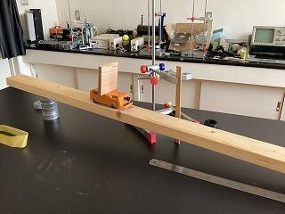

SAGANO BLOG
- >
- SAGANO BLOG
- >
- 部活動
2022年09月12日
剣道部の活躍
2022年9月10日に山城高等学校で行われました
第41回京都府立高等学校剣道大会において
男子団体の部で準優勝しました。
メンバーは以下の部員です。
男子団体
堀内 悠登（2年）、森 路長（2年）、荒金 俊明（2年）
田村 優樹（1年）、西沢 知剛（1年）
1回戦の洛北高校、2回戦の鳥羽高校、準決勝の山城高校と危なげなく勝利し、決勝に駒を進めました。決勝の久御山高校は今年度インターハイに出場した強豪校ですが、2年の森選手の活躍もあり、1本取れるところで取り、守るところは守りながら互角に戦いました。惜しくも1本差で負けてしまいましたが、チームとしての地力が着実についてきたことを実感しました。
11月に行われる京都府剣道新人大会へ向け、この経験を糧にさらに精進していこうと思います。
{kind=link}
2022年08月26日
８月５日、６日の２日間に渡って開催された全国中学校・高校即興型英語ディベート合宿・大会2022（主催：一般社団法人パーラメンタリーディベート人財育成協会）に、本校ESS部が参加しました。同会はコロナ禍の影響により、昨年に引き続きオンラインでの開催となり、本校からは１、２年生合同で計３チームが参加しました。
{kind=link}
{kind=link}
即興型英語ディベートでは、論題、および各チームの立場（賛成または反対）がその場ではじめて提示され、準備時間も１５分と限られています。日常生活や教育、時事に関する論題が出され、英語での発信力や思考力のみならず、幅広い教養やチームワークも問われます。
{kind=link}
{kind=link}
今回の合宿・大会では、2日間で計6回のラウンドを戦うというこれまでにない濃密な時間を過ごしました。また、2年生の榊野紗也さんが、ベストディベータ賞と、POI（Point of Information）賞を受賞しました。
{kind=link}
{kind=link}
次は秋から冬にかけての練習会や大会に臨みます。今回の合宿・大会で得た学び、悔しさ、達成感を胸に、次なる舞台に向けて英語ディベートの練習に励んでいきます。
2022年08月25日
「やってみたい実験がある」との提案があり、１年生５名が以下の実験に取り組みました。
内容はシンプルです。斜面の上に、例えばかまぼこ板のような板を立てようとすると、ある角度以上の斜面では倒れてしまいます。しかし、写真のように、斜面上に台車を置き、台車の上に板を立てて静かに台車を滑らせると、板は台車上で倒れることなく、台車とともに斜面を下ります。実験してみると、おもしろいことに、斜面の角度を大きくしても板は倒れないまま台車は斜面を下りきることを確認しました。
このことを理解するには、１年生にとっては未習領域の知見が必要です。１年生は教科書を参考に、なぜ板は倒れなかったのか考察しました。

{kind=link}
（これは実験の様子の再現写真です）
2022年08月24日
ワンダーフォーゲル部、３年ぶりに北アルプスで夏合宿
嵯峨野高校ワンダーフォーゲル部は2週間前から毎日検温、体調管理の上、合宿を実施しました。32名の生徒が初めて挑む、合宿形式での北アルプス山行です。経験値が少ない中、互いにカバーしながらテント設営や炊事を行いました。
{kind=link}
{kind=link}
「涸沢で満天の星空が見たい。」、「3000mの山々の絶景が見たい。」・・・行きの貸切バス内での参加生徒が語った合宿への意気込みです。しかし、残念ながらベースとした涸沢キャンプ場の横にあるヒュッテはコロナ禍でお休み、目指した北穂高山頂も早朝からの激しい雷雨のため登れませんでした。
{kind=link}
{kind=link}
でも生徒たちは、はじめてのテント泊、仲間と一緒に食事の準備をし、明神や横尾では素晴らしい景色も見ることができ、厳しい自然と対峙し、本物の「山の世界」を一部だけですが、体験するという機会を得ました。
{kind=link}
山登りは「非日常」の世界です。最初は、「雲海や岩と雪の景観」、「満天の星空」、「モルゲンロートに輝く山々」に感動しますが、「夜７時就寝・朝３時起床の生活」、「岩の上で寝袋にくるまり寝る」、「スマホの電波が届かない世界で過ごす」という体験は、何日も３０００ｍの世界にいると、それが実は当たり前のようになってきます。そうすると、日常の世界がいかに普通でないかというのも感じられるし、家族のありがたさや家という建物のありがたさ、水道やガス、電気といったもののありがたさを感じられると思います。そんな非日常の世界を高校時代に四日間だけでしたが体験できたというのは、これからの人生の中で貴重な経験になったと思います。そして、そういう非日常の世界が体験できたのも、保護者の方々の理解があったからこそだと思います。とにかく保護者の方々に感謝です。また、テントサイトや山中での大人数での行動で、ご迷惑をおかけしました。この場を借りてお詫び申し上げますとともに、合宿を行うにあたり、様々な支援をいただいた関係者の方々、不慣れなアルプスでの登山活動を暖かく見守っていただいた方々に感謝申し上げます。本当にありがとうございました。
{kind=link}
{kind=link}
{kind=link}
2022年07月28日
７月２３日、本校ESS部の部員１０名が、京都市立日吉ヶ丘高校にて開催されたパーラメンタリーディベート（即興型英語ディベート）講習会兼交流会に参加しました。コロナ禍が続く中、これまでオンラインで他校とのディベートの試合に臨んできた本校ESS部ですが、今回は数年ぶりの対面での試合となりました。本校３年生にとっては、最初で最後の対面でのディベート公式戦でした。
{kind=link}
ディベート教育実践家、九州大学学術研究者の加藤彰先生による講演会の後、交流会が催されました。本校からは３チームが参加し、結果は２勝１敗と健闘しました。参加した生徒からは、「日頃の部活での練習が大いに役に立った」「対面でのディベートは非常に楽しかった」という意見が聞かれた一方、思ったように英語で話せなかったという悔しさを感じた生徒もいたようでした。
{kind=link}
{kind=link}
{kind=link}
試合後、本校の橋長正樹校長の英語による閉会の挨拶にて、この日の講習会・交流会は締めくくられました。高校生活３年目にして初めて対面での他校とのディベートに臨んだ３年生も、初めて校外での公式戦に参加した１年生も、各々が日頃の練習の成果を大いに発揮できました。３年生はこの日の試合で引退となりますが、人数も増えてやる気満々の１，２年生が、嵯峨野ESSのディベート魂を継承し、大いに盛り上げてくれることでしょう。
{kind=link}
{kind=link}
2022年06月27日
狂言部でも3年生が引退し(5月上旬)、1・2年生での活動が始まっています。
今年の「とこのは祭(文化祭の部)」に向けて、『附子(ぶす)』に取り組むことになり、大蔵流狂言師14世茂山千五郎先生に御指導いただいているところです。
『附子』は、擬音語や仕草の面白さ、太郎冠者と次郎冠者の掛け合い、最後には謡や舞も登場する、狂言の色々な魅力がいっぱい詰まった名曲です。
お客様には楽しんでいただける一方、演じる側には大変な面もあるのですが、千五郎先生の丁寧な御指導のもと張り切って練習しています。
現状の部員3名では少し寂しいので、文化祭の上演を成功させ、新しい部員を獲得したいものです。
{kind=link}
{kind=link}
{kind=link}
{kind=link}
2022年06月13日
{kind=link}
{kind=link}
嵯峨野高校の登山のクラブ、ワンダーフォーゲル部です。
ワンダーフォーゲルはドイツ語で「渡り鳥」という意味で、自然に親しみながら、日々体力アップに励んでします。今年度は１年生３４名を迎え、大所帯での活動となっています。
６月１１日は、今年度はじめて１・２年生だけでの登山となりました。一等三角点のある比良山系「蓬莱山」からの３６０度の絶景を望む予定でしたが、残念ながら一面の霧で、視界は１０ｍほどしかありませんでした。
これから夏のアルプス登山に向けて、さらに体力をつけていきます。
競技登山も行っています。秋に行われる近畿大会に男女揃って出場することが決まっています。
2022年06月10日
こんにちは！華道部です。
本校の和室でお稽古をしています。
{kind=link}
日本三大流派のひとつ、いけばな小原流の先生に教わっています。
水盤と剣山を使う盛花といういけばなは、小原流が始められたものだそうです。
{kind=link}
{kind=link}
{kind=link}
{kind=link}
{kind=link}
先生からのご指導があり、きれいにいけることができました。
{kind=link}
同じ花でもいけ方で雰囲気が変わります。
花の持っている良い姿を見つけていけていきます。
花は部屋の景色を変えるだけでなく、私たちの心も変えてくれるものかもしれないなと感じています。
７月の学校説明会では、中学生や保護者の皆様を、華道部のいけばなでお迎えいたします。
心を込めていけますので、どうぞご覧ください！
2022年06月07日
去る６月４，５日、春季卓球選手権大会府下二次予選が行われ、男子学校対抗において嵯峨野高校は８強入りは逃したものの、最後の１枠をめぐる敗者復活戦を勝ち上がり、京都府第９位として、７月16～18日にグリーンアリーナ神戸で行われる第76回近畿高等学校選手権大会への出場を決めました。夏の近畿大会への出場は２年連続となります。なお、試合結果については京都府高体連卓球部のホームページに掲載されています。
2022年06月06日
6月5日（日）に開催された京都府高等学校ソフトテニス選手権大会 男子団体戦において、京都府ベスト８になり、近畿大会への出場権を獲得しました。出場選手以外の部員も応援に駆けつけ、チームとしてともに戦うことができました。今後も限られた時間をうまく使い、練習に励んでいきます。
2022年06月05日
６月５日（日）に、洛南高校を会場として、小倉百人一首競技かるた第４４回全国高等学校選手権大会の団体戦、京都府予選が開催されました。
参加９校が３つのリーグに分かれ、成績上位の４校が翌週の決勝リーグに進出することができます。
団体戦では、試合ごとに５名ずつを選び、５vs５で同時に対戦を行い、勝者の多い学校が勝ちというルールで行います。
嵯峨野高校の小倉百人一首かるた部も、この大会に団体戦メンバー８名で参加しました。
本校は大谷高校、山城高校と総当たりのリーグ戦を戦い、健闘しましたが、残念ながら決勝リーグ進出とはなりませんでした。
この経験を糧に、さらに精進していこうと思います。
{kind=link}
{kind=link}
{kind=link}
{kind=link}
2022年05月24日
剣道部の活躍
令和４年５月21日（土）に京都府立久御山高等学校で行われました令和４年度京都府高等学校総合体育大会剣道の部において
女子団体の部で京都府第３位に入賞しました。
メンバーは以下の部員です。
吉田 絢香（３年）、三浦 彩愛（３年）、帰山 歩奈（２年）
大牧 美緒（１年）、段本 菜月（１年）
{kind=link}
※写真撮影時のみマスクを外しています。
昨年度まで女子は３名しかおらず、団体戦の人数が足りない状況でしたが、今年度４名の１年生が入部し、５名そろった状態で新チームとして試合に臨みました。１回戦の西京高校、２回戦の西城陽高校とも接戦をものにして３回戦へと進みました。続くは強敵の京都成章高校でしたが、２年生の帰山選手が素晴らしい面で２本勝ちし、そのリードを守り切って準決勝に駒を進めました。
準決勝の北嵯峨高校には惜しくも敗退しましたが、チームとして手応えを感じることができました。来月のインターハイ予選では、男女とも近畿大会への出場を目指して力を尽くしていってもらえたらと思います。
2022年05月18日
サイエンス部中心に校有林でお茶を育てようという新しいプロジェクトが発進しました。
5/8（日）サイエンス部の活動に茶道部も参加。茶道部は今年もお茶碗を制作するための陶土を採取するのと並行して苗木の植え付けにも参加させていただきました。
春らしい爽やかな気候の中、いつの日か自分たちが植えたお茶をいただくことができる日を楽しみにしています。
{kind=link}
サイエンス部 微地形の測量
{kind=link}
サイエンス部が掘ってくれていた穴を見習って茶道部も掘ってみました
{kind=link}
初めて見ました！複式ショベルというそうです。
これがあると、掘り進むのがとても楽でした。
{kind=link}
苗木を植えていくために、土を細かくほぐしています。
根っこを痛めないためです。
{kind=link}
苗木を植えていきます。谷口先生の指導を受けながら
お茶が育ちやすいようにpHの調整をしました。
{kind=link}
今年もお茶碗を焼くための陶土の採取も行いました。
昨年より穴がどーんと大きくなっています。
{kind=link}
プロジェクトのスタートです。最後にみんなで集合写真を撮りました。
2022年04月01日
嵯峨野高校ラグビー部の活動報告です。
３月27日（日）に滋賀県野洲市の希望ヶ丘文化公園で近畿の少人数校による選抜チームの交流大会が実施されました。春の晴天にめぐまれる中で、真新しい人工芝のグラウンドを使わせていただき、京都府代表としてラグビーをプレーできるという貴重な機会を得ることができました。
本校生徒は、奈良県選抜との交流試合に、ロックのポジション（背番号５）で先発しました。残念ながら、試合は敗戦しましたが、前日までに実施していた代表選手による合同練習を含めた日ごろの練習の成果を存分に発揮してくれました。中学校までの競技経験が無くても、一生懸命練習を積み重ねれば、このような最高の舞台に臨むことができるということを、身をもって示してくれています。
直前までまん延防止等重点措置が出されている状況でしたが、主催していただいた滋賀県の運営役員の方々をはじめ、多くの方々の御尽力により、彼らの貴重な試合の機会が失われずに済みました。この場をお借りして感謝申し上げます。
さて、新年度が始まります。嵯峨野高校ラグビー部として、新たなスタートを切り、２年連続で開催できていない春の総体や秋の全国大会予選など、多くの公式戦に臨んでいく予定です。
新入部員のみなさんの入部をお待ちしています。
{kind=link}
{kind=link}
2021年12月27日
１２月２５日、２６日の２日間に渡って開催された第7回PDA高校生即興型英語ディベート全国大会2021（主催：一般社団法人パーラメンタリーディベート人財育成協会）に、本校ESS部の２年生２名、１年生１名が参加しました。同大会はコロナ禍の影響により、昨年に引き続きオンラインでの開催となりました。応募校が年々増えており、今年は例年より約２０校多い８５校が選抜されました。本校は6年連続出場しています。
即興型英語ディベートは、論題と各チームの立場（賛成または反対）がその場で提示され、準備時間も１５分と限られています。ESS部のメンバーはこの日のために練習を重ね、他校との練習試合も繰り返し行ってきました。今回は「２０２２年北京オリンピックは延期すべきである」「新型コロナウイルスワクチン接種を義務化すべきである」「米国はアフガニスタンから撤退すべきではなかった」といった時事に関する内容が論題となりました。即興型英語ディベートでは、賛成・反対どちらの立場でも対応できるように、社会情勢への高い関心と幅広い知識を持つこと、そしてもちろん英語で自在に表現する力が求められます。また、３人チームでの対戦となるため、チームメンバーとの信頼関係と連携力も不可欠です。
本校ESS部の3名は残念ながら予選敗退となりましたが、論題に関する専門家（キーノートスピーカー）によるレクチャーや、強豪校による決勝トーナメント戦の見学を通じて、多くのことを学ぶと共に、次回の公式戦に向けたモチベーションを高めることが出来ました。また、本校は英語の授業等でもディベートに取り組んでおり、「授業導入賞」を受賞しました。
{kind=link}
{kind=link}
{kind=link}
{kind=link}
2021年12月16日
12月12日(日)、今年で11回目となった「嵯峨野高校狂言の会」を開催しました。会場は、毎年お世話になっている冬青庵(とうせいあん)能舞台(京都市中京区)です。
年によっては100人近いお客様が会場をぎっしり埋めつくされることもありましたが、昨年度に引き続き新型コロナウイルス感染対策から、定員を40名とし事前予約制をとったところ、早々に満席の申込みを頂戴しました。お子様が卒業されてからも毎年来てくださる保護者の方がいらっしゃることは、とても嬉しいことです。また、狂言部の卒業生が何人も来てくれて、受付の仕事などを手伝ってくれました。
当日は、消毒、検温など感染対策に留意して実施することになりました。とはいえ、役者がマスクをしていては表情が見えませんので、お客様にお願いしてフェイスシールドを着けていただきました。
(1)「土筆(つくづくし)」：1年生1名、2年生1名
野遊びに出かけた2人の男、土筆(つくし)を摘んでいるうちに、歌をよみ始めたことから思わぬ事態に発展します。
{kind=link}
(2)「棒縛(ぼうしばり)」：1年生1名、2年生2名
酒の盗み飲みができないように縛り上げられた太郎冠者と次郎冠者。でもそうなるといよいよ飲みたくなって......。
{kind=link}
今年は4・5月の行事や9月の文化祭での公演を開催できなかったので、今回の発表会が部員にとって貴重な舞台になりました。その分、いつも以上にしっかり声を出して、気持ちのこもった演技ができたと思います。ポイントポイントで客席から賑やかな笑いをいただきましたので、皆さんに狂言の楽しさ、面白さを伝えることができたのではないでしょうか。
今年も茂山千五郎先生はじめ茂山狂言会の先生方から懇切丁寧に御指導をいただいた成果です。あらためて心から感謝を申し上げます。
休憩をはさんで、茂山狂言会の網谷正美先生と山下守之先生に「寝音曲(ねおんぎょく)」を演じていただきました。主人と太郎冠者のやりとりに笑わされ、網谷先生(太郎冠者)の朗々とした謡に圧倒され、伝統芸能の素晴らしさを堪能させていただきました。
これに先立ち11日(土)には「令和3年度全国高校生伝統文化フェスティバル―茶道フェスティバル―」(京都学・歴彩館)の開会行事に歓迎公演として参加し、2年生3名が狂言「口真似(くちまね)」を演じました。
2021年11月15日
芸術の秋です。
美術部・デザイン工芸部も秋は1年で一番忙しく、充実した時間を送っています。
● 京総文に参加
10月30，31日にみやこめっせ地下1階の日図デザイン博物館で「京都府高等学校総合文化祭美術・工芸部門」の作品展が実施されました。
本校美術部・デザイン工芸部からは13名ずつ、計26名の生徒が作品を出展しました。
1学期からコツコツと制作した作品です。今年は緊急事態宣言の発令もあり、十分な制作期間を確保できませんでしたが、なんとか作品を完成させることができました。
{kind=link}
{kind=link}
美術部員の絵画作品。高校生らしい瑞々しい感性です。
{kind=link}
{kind=link}
デザイン工芸部では、ステンドグラスや漆芸、陶芸、染色の作品を出展しました。
根気強く１つ１つの工程を進めてきました。
{kind=link}
京総文出展作品の審査が行われ、本校からは次年度の近畿高等学校総合文化祭に京都府代表7名のうち、3名（美術部1名、デザイン工芸部2名）が選出されました！
年が明けたら近畿総文に向けて作品制作を行います。また素敵な作品を作ってくれることを期待しています！
● 令和3年度第41回近畿高等学校総合文化祭滋賀大会出場！
11月13日14日に滋賀県近江八幡で行われた近畿総文美術・工芸部門にデザイン工芸部の3年生が出場しました。
13日に関連行事が行われ、午前は建築家 藤森照信氏設計のラ・コリーナ近江八幡の施設見学に参加しました。
ラ・コリーナのスタッフの方の解説をイヤホンで聴きながら建築を隅々まで鑑賞。一般公開されていない社屋も見学させていただきました。
{kind=link}
{kind=link}
午後からは場所を移し、ヴォーリス学園近江兄弟社高等学校で開会式と建築家 藤森照信さんのオンライン講演会を聴講しました。
{kind=link}
その後、近江八幡市街に移動し、近畿代表として各府県から集まった作品をグループで鑑賞しました。
自分の作品を各府県の代表生徒の皆さんに説明したり、感想を頂いたり交流しました。
{kind=link}
{kind=link}
秋晴れの気持ちの良い日に建築と美術をじっくり堪能できました。
2021年11月15日
● 校有林に陶土サンプリング、材木探しへ
11月6日土曜日には、美術部、デザイン工芸部で校有林へ出向き、3学期の活動で使用する陶土や材木を採取しに行きました。

理科の谷口先生から、校有林の土壌や陶土についてレクチャーを受けています。
{kind=link}
交代で土を掘ります。
{kind=link}
木工に使えそうな木材を切っています。
今回持ち帰った材料は、陶芸でスープカップ、木工でスプーンを制作する予定です。
ものづくりは素材の恵みがあるからこそできることです。校有林での素材を大切に使っていきたいと思います。
〒616-8226
京都市右京区常盤段ノ上町15番地
TEL 075-871-0723 FAX 075-871-0724
E-mail [email protected]
Copyright (C) 京都府立嵯峨野高等学校 All Rights Reserved.